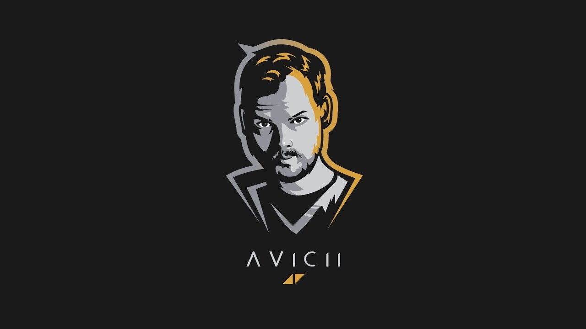

AVICII // Tim Bergling Tribute Page
Absolute Legendary Music Creator
"Avicii Fanart"
Here's a timeline of his life:
- 1989 - Born in Stockholm, Sweden
- 2006 - Began posting his remixes on electronic music forums, which led to his first record deal.
- 2010s - Several music publications credit Bergling as among the DJs who ushered electronic music into Top 40 radio in the early 2010s.
- 2011 - He rose to prominence in 2011 with his single "Levels".
- 2012 - Bergling was nominated for a Grammy Award for his work on "Sunshine" with David Guetta in 2012 and "Levels" in 2013.
- 2013 - His debut studio album, True, blended electronic music with elements of multiple genres and received generally positive reviews
- 2015 - In 2015, Bergling released his second studio album, Stories
- 2016 - Bergling retired from touring in 2016 due to health problems, having suffered from stress and poor mental health for several years.
- 2018 - Dies at the age of 28.